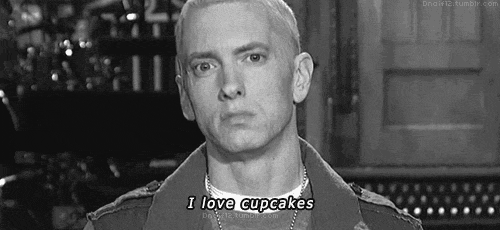

About us:
Hello! This website was set up by 2 University of Pittsburgh students, Wesley Ho and Monica Felix, to display our work analyzing 90s rap music for our class Computational Methods in the Humanities.
Wesley Ho
Hi, I'm a 2021 graduate of the University of Pittsburgh main campus where I am working towards a bachelors degree in Information Science as well as considering a second major in economics. As a member of the Rap-90s project, I wrote the schema, some of the lyrics, most of the website, and worked on the varius data visualizations included in the website.
Monica Felix
I will be a graduate of 2018 of University Pittsburgh’s main campus. I am studying Finance with two minors in Italian and Spanish, as well as a certificate in International Business. I worked on the song lyrics, the development of the website, and wrote the history of the rappers and the analysis for the project.